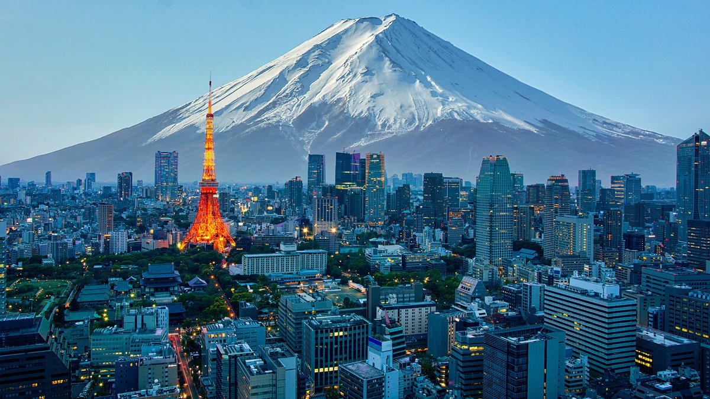

日本
日本為君主立憲制，議會制政府，皇帝為象徵性國家元首，79%人口每天看電視，日本目前面臨人口老齡化問題，痴呆症已超過其他死因，成為長壽國家的重要挑戰。同時，最近大阪高等法院裁定同性婚姻禁令違憲，反映社會對人權問題的關注。經濟方面，日本銀行政策制定者討論進一步提高利率，與國際市場動態密切相關。
日本為君主立憲制，議會制政府，皇帝為象徵性國家元首，79%人口每天看電視，日本目前面臨人口老齡化問題，痴呆症已超過其他死因，成為長壽國家的重要挑戰。同時，最近大阪高等法院裁定同性婚姻禁令違憲，反映社會對人權問題的關注。經濟方面，日本銀行政策制定者討論進一步提高利率，與國際市場動態密切相關。
芬蘭是北歐國家，以其自然美景、高生活品質和獨特文化聞名，人口約560萬。 該國擁有超過18萬個湖泊，森林覆蓋面積約75%，氣候從南部溫帶到北部亞北極。 芬蘭經濟高度工業化，主要產業包括電子、機械、林業和化學品，是歐盟成員國。 文化強調平等、誠實和自然連結，官方語言為芬語和瑞典語，大多數人說芬語。 政府為議會共和制，總理為政府首腦，總統為國家元首，首都為赫爾辛基。
荷蘭位於西歐，與比利時、德國和北海接壤，人口約1790萬，密度高。 它是個平坦的國家，部分土地低於海平面，以運河、風車和鬱金香聞名。 經濟以貿易、製造業和服務業為主，鹿特丹港是歐洲最大港口。 文化強調開放和包容，官方語言為荷蘭語，藝術遺產豐富。 政府為君主立憲制，現任首相為迪克·舒夫
法國，正式名稱為法蘭西共和國，位於西歐，人口約6800萬，首都為巴黎。 地理上，法國擁有多樣化的地形，包括阿爾卑斯山、比利牛斯山和馬西夫中央，與多個國家接壤。 歷史上，法國經歷了羅馬統治、法國大革命、拿破崙時代和兩次世界大戰，是歐盟創始成員。 文化上，法國以藝術、文學、時尚和美食聞名，擁有羅浮宮和埃菲爾鐵塔等地標。 經濟上，法國是歐洲第二大經濟體，產業包括航空航天、汽車和旅遊業。 政府為半總統制，現任總統為埃馬紐埃爾·馬克龍，總理為弗朗索瓦·巴魯。